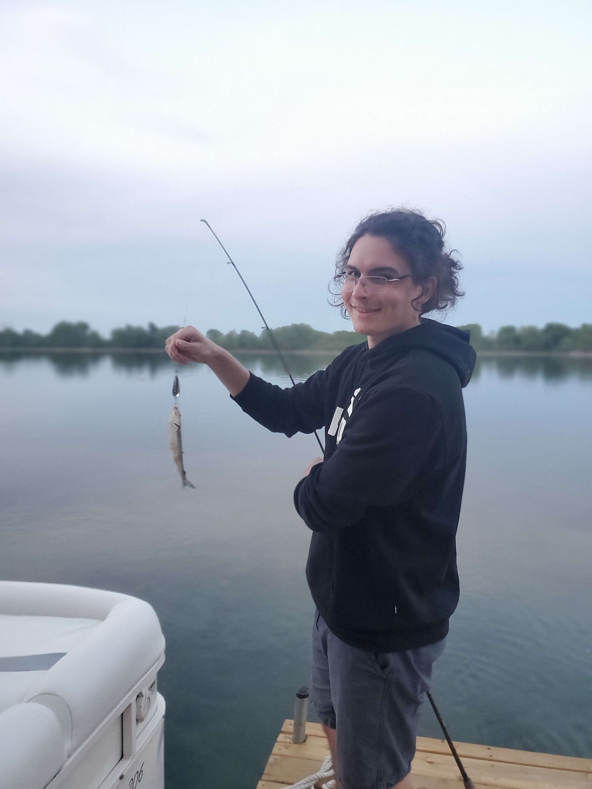

Hello, welcome to my website! I'm Nicholas Ghezzi, an aspiring software developer.
I'm a computer programming student based in Ottawa with a passion for software development. I graduated with an advanced diploma in Game Development from Algonquin College in 2021, where I learned and acquired a love for computer programming. I am currently enrolled in a computer programming program to expand my knowledge and take my skills to the next level.
After completing an Advanced Diploma in Game Development at Algonquin College, I enrolled in Computer Programming at the same college. During my time in these programs, I have accumulated a wide skill set that includes C++, Java, C#, and a strong command of Object-Oriented Design. In my last year of Game Development, I participated in an eight-month long capstone project where all my skills were put to the test. Due to capstone being a large group project, I developed and improved other skills that are necessary to work in the industry such as teamwork, communication, project management, and leadership.
The experience, skill, and passion I have for software and technology have made into the core software developer I am today. Feel free to explore my site and or contact me!